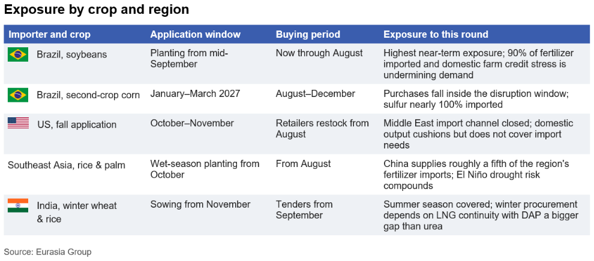
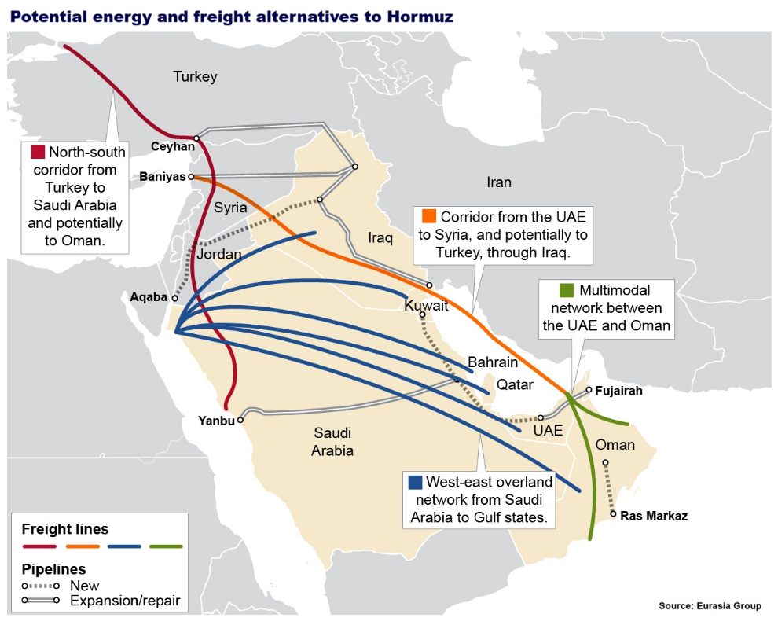
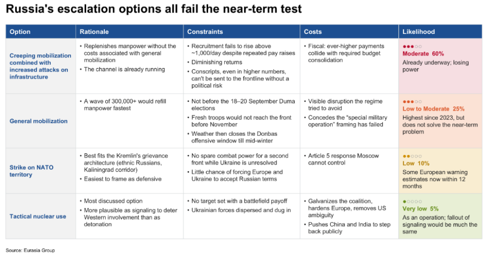
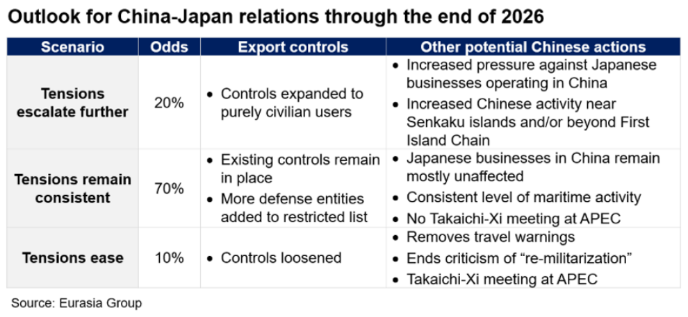
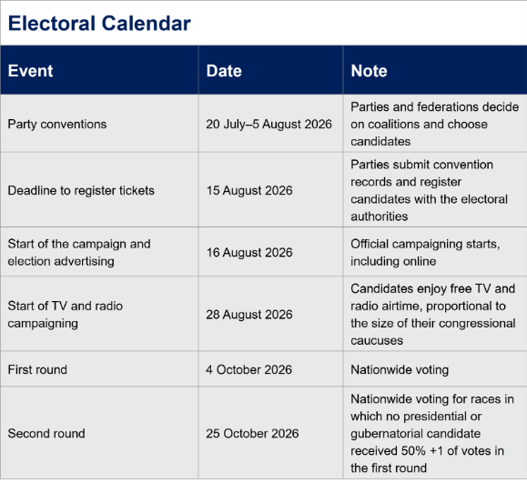

|
22 Jul 2026 07:52 EDT |
||
|
|||
summary
|
|||
the top lineResources—Agriculture prices set to rise as second Hormuz shock hits buffers
 MENA—Derisking Hormuz will reshape regional trade corridors
 US, Canada, Trade—Use of Section 338 is significant expansion of the trade toolkit
China, Taiwan—Beijing leveraging US truce to expand maritime control around Taiwan
Russia—Fiscal challenges boost escalation odds despite Putin’s limited options
 China, Japan—Beijing will maintain calibrated pressure campaign against Tokyo
 Upcoming conference calls |
||
eg in depthIndia—India’s higher ethanol flex fuel mandate will be delayed for at least a year: Prime Minister Narendra Modi’s government remains committed to expanding ethanol use despite abandoning plans to fast-track a mandatory E25 blend requirement for automobiles—a standard calling for 25% ethanol and 75% petroleum. A series of policy measures to pave the way for a smooth ethanol transition to blends above E20 will follow before any new mandate is considered, which could take at least another year. The resulting decline in domestic ethanol demand will also delay a broader policy debate about opening up India to ethanol imports and setting international trading standards under a Global Biofuel Alliance, a G20 initiative led by India and Brazil. Read more here. Reach out to discuss: southasia@eurasiagroup.net. Colombia—Petro plans active opposition: On 20 July, President Gustavo Petro said that he will lead his leftist Historic Pact and urged supporters to protest policies of the incoming Abelardo de la Espriella administration as the polarized country prepares for a fraught transfer of power. In a final Independence Day speech, Petro championed his administration’s social gains, called for strikes if the incoming administration reverses them, said the opposition would mobilize peacefully in the streets, and repeated allegations of fraud in the June runoff. He later announced a legal challenge to the presidential election result; however, that effort is unlikely to succeed or disrupt De la Espriella’s inauguration. De la Espriella will likely break from Petro’s policies despite his narrow margin of victory and pressure from protesters, relying on hardline security measures to build public support. Read more here. Reach out to discuss: latinamerica@eurasiagroup.net. Brazil—Party conventions will test whether Bolsonaro can broaden his coalition: Senator Flavio Bolsonaro's VP pick remains the central open slot in the election, as his preferred choice of Daniella Marques hinges on a stalled coalition deal with Republicans, while President Luiz Inacio Lula da Silva's unchanged ticket signals stability and preserves his moderate, centrist image. VP choices will have modest electoral impact, though a female running mate could marginally help Bolsonaro with female voters—a constituency that has trended toward Lula, and where the gap could matter in a close race. Despite first-round fragmentation, right-wing candidates are likely to coalesce behind the strongest opposition contender in the second round against Lula. Read more here. Reach out to discuss: brazil@eurasiagroup.net.  Upcoming events:
The EG Daily Brief is compiled by Jens Larsen, Lucy Eve, Babak Minovi, Pietro Guglielmi, Rahul Bhatia, Marilia Sirio, Joseph Craven, Martina Silva, and Trista Kelley, with help from Marina Tavares, and Astral Betteridge. |
||
 |
closing quipI’ll never stop fighting to protect Ontario, [...] If these tariffs proceed, Canada should respond tariff for tariff, dollar for dollar.”—Doug Ford, Ontario Premier Doug Ford, said in response to Trump’s tariffs. |
||
 |
|||